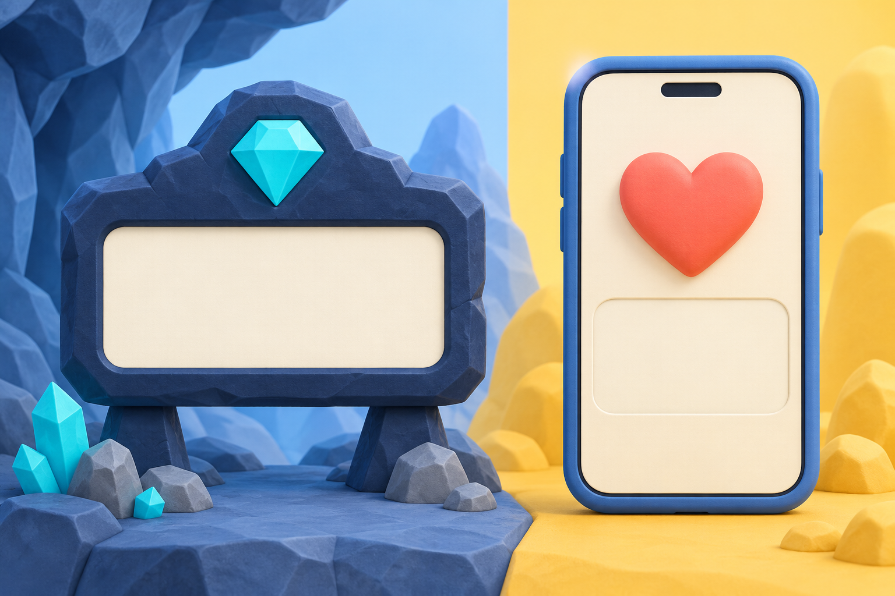
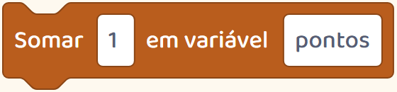

Por trás do jogo
O placar não mostra tudo o que aconteceu no jogo.
Ele conta o que alguém escolheu contar.

O placar não mostra tudo o que aconteceu no jogo.
Ele conta o que alguém escolheu contar.

Um jogo pode dar pontos por moedas, tempo ou inimigos derrotados.
Quem cria decide qual ação faz o número subir.
Veja esta mina da nossa plataforma.
Cavar uma pedra abre caminho. Encontrar um cristal também acrescenta um ponto.
As duas ações fazem parte da partida, mas só uma muda o placar.

Essa diferença foi definida numa instrução do jogo.
Ao criar, a criança pode escolher outra regra e testar.
O que mudaria se cada pedra também valesse um ponto?
Essa conversa ajuda a fazer uma pergunta sobre os números da tela: ‘O que está sendo contado aqui?’
Curtidas, por exemplo, contam reações a uma publicação. Não contam tudo sobre quem a fez.
Criar um placar permite ver de perto como uma regra produz um número.
Siga o perfil para conhecer mais descobertas da criação de jogos.